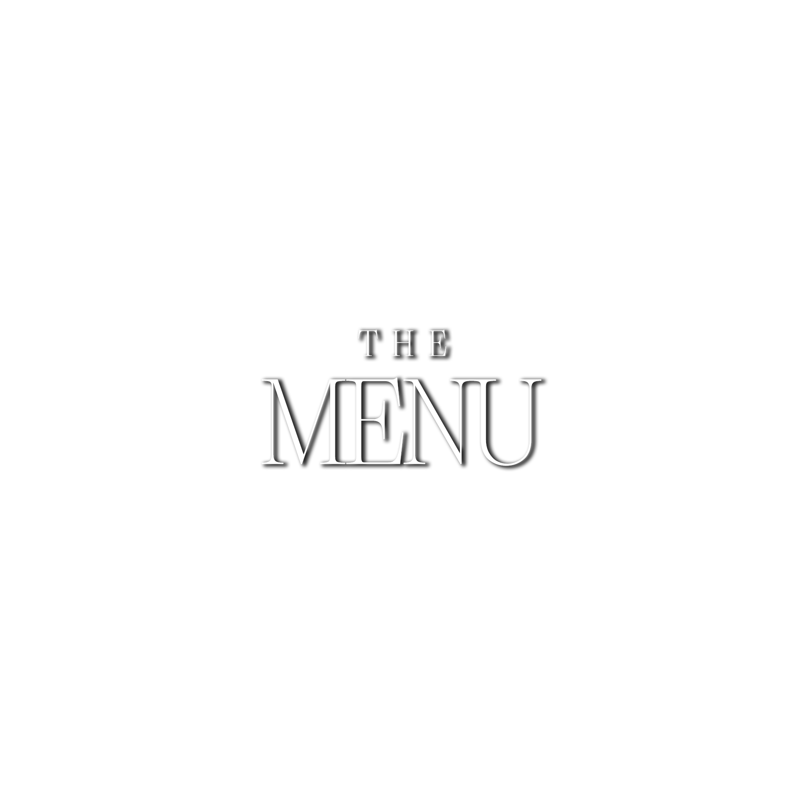

Menu
SALVATORE is a progression of rare and beautiful ingredients
where texture, flavour and harmony is paramount.
Continually inspired by nature, the creative process for chef Rory Gilmore
begins in working closely with the farmers, fishermen, producers and artisans
who cultivate bespoke produce exclusively for this fine-dining restaurant.
For each dish,
the growth of every element and the selection of every piece
is carefully thought-out and crafted for its role in the dining experience.
We bring a personal, interactive passage for diners
through Rory Gilmore’s culinary pursuit.